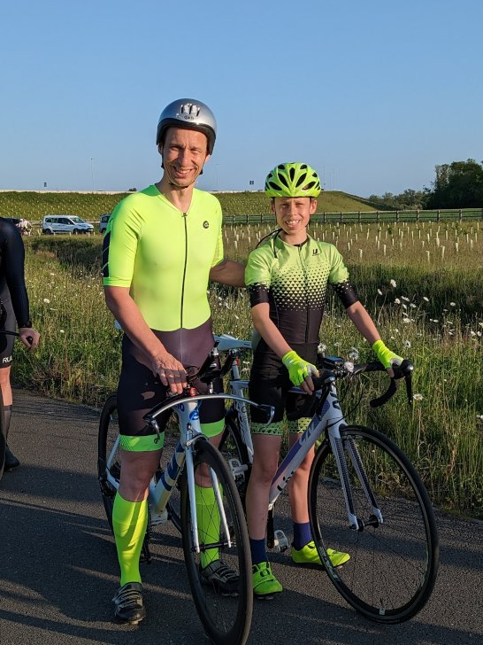
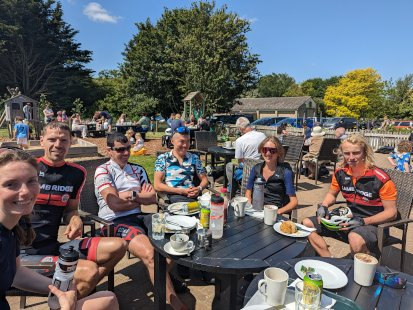

Juniors

Cambridge Cycling Club is committed to help and encourage junior riders to join our Club runs and take part in our Club time trial events.
Sunday Club runs are generally 50-60 miles long and groups are divided into various speeds. It is expected that juniors would join the slower groups to start with depending on their experience in group riding. Juniors also have the option for parents to collect them at the halfway coffee stop.
To enter our Club time trials, juniors will need to provide a completed CTT Parental Consent (Club Events Type B) in respect of each event.
If you would like to speak to someone, contact our Juniors Co-ordinator
Cambridge Junior Cycling Club (CJCC)) is a separate organisation that holds hour long off road sessions in Milton Country Park concentrating on bike skills. Information about this can be found here: - https://www.miltoncountrypark.org/cjcc

Guidance for Ride Leaders
Ride Leaders can be assured that the Club holds parental consent for junior members.
If a junior wishes to join a ride and they are NOT a Club member, the junior must present a completed Club Run Parental Consent to the ride leader.
To comply with British Cycling Best Practice Guidelines ride leaders will appoint a "buddy" to ensure the junior is not left on their own during the ride. Go to our insurance page for more detail.